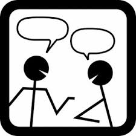

Office Hours, Etc.

Name
Office Hours
WVH
Matthias
matthias @ ccs
W 05:00–06:30, +apt.
308 B
Michael
ballantyne.m @ husky
T 04:00–06:00
308 desk
Aditi
kacheria.a @ husky
W 03:00–05:00
308 piazza
Dustin
jamner.d @ husky
F 01:00–03:00pm
308 piazza
Announcements The front page of the course’s web site is also the announcement page. Most of the announcements will point to small corrections to the weekly projects and responses to general email inquiries.
Consult it at least once per day.
Piazza For general questions about the course and homework assignments you may use the Fall 2019 CS 4500 Piazza. This Piazza is distinct from the WVH 366 piazza, which is a physical place.
Email You are welcome to send email to the course staff and you are almost always guaranteed to get an answer within 24 hours, If you send email to other addresses, we will ignore them because they violate the course specifications, and learning to live up to specifications is critical.
Office Hours Different members of the staff play different roles, and you must keep this in mind when you visit someone during office hours.
Aditi and Dustin have primary responsibility for grading your projects. If you and your partner disagree with a grade, you need to see the person who has signed off on your grade.
See Michael if you have difficulties with the weekly assignment, wish to discuss design ideas, or have problems with some assumedIf JSON, TCP connections, or similar terms are opaque to you, we expect you to use Google and read up on the basics, first in a general way and then in a language-specific way. technical material. Again, we expect you to visit him as a pair.
See Matthias with any concern you have (coding, specifying, grading, course staff, partner issues, etc.)